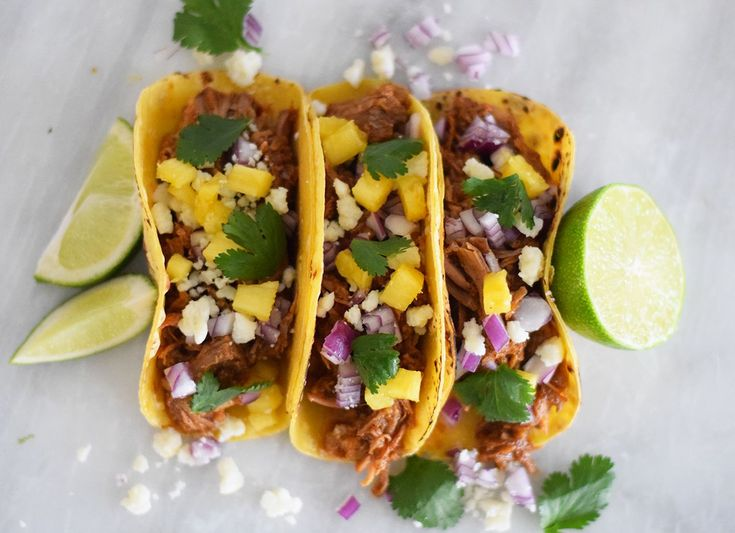

Tacos Al Pastor Recipe

Description
Tacos Al Pastor are thinly sliced pieces of marinated pork that make for the best taco. Serve them up with some sliced onion, pineapple, and cilantro and you have yourself a fantastic dinner your family will devour.
Ingredients
- 1 oz guajillo chilis
- 1 oz achiote paste
- 1/4 cup pineapple juice
- 1/4 cup white vinegar
- 3 garlic cloves
- 1/2 tsp oregano
- 1/4 tsp black pepper
- 2 cloves
- 1 1/4 tsp salt
For the Tacos
- 2 lbs pork butt
- salt & pepper
- 1 medium onion
- 1 can pineapple rings
- 1 medium bunch of cilantro
- 1 medium onion chopped
- 12 corn tortillas
- salsa of choice
Steps
- Place the peppers in a saucepan and cover with water. Simmer over a medium heat for about 15 minutes or until they look soft. Let them cool and drain.
- Place peppers, vinegar, pineapple juice with the spices and achiote paste in your blender. Process it until you have a very smooth sauce. Pour the sauce slowly through a fine sieve to get a nice homogenous texture. At this time, taste the sauce just to make sure the salt is enough for your taste.
- Season the meat with salt and pepper. Place the sauce and steaks in a large bowl and marinate the meat or use a pastry brush and apply the sauce to each side of the steaks.
- Marinade for at least 4 hours or overnight of hours (believe me it tastes way better), and then grill the steaks or fry in a skillet. Grilling some pineapple and onion slices along the meat to add to the tacos when serving. When cooking in a skillet, remove any excess adobo sauce since it will stick to the pan.
- To cook in the Vertical Rotisserie stake the meat intercalating with some slices of onions and pineapple. Let any marinade drain for about 20 minutes before starting the timer. 1 Hr. is enough to cook 2 pounds. Shave the meat with a sharp knife and place it in an already warm skillet to give it that crisper taste as they do at the taquerias in Mexico.
- The second option is using the broiler of your oven. Cut the meat as for Kabobs and insert into the skewer placing onion and pineapple slices between the meat. Since the meat is cut in smaller portions this method will take about 20 minutes to cook rotating at least 2 times while cooking.
- Now, this is the easiest since almost anyone has a frying pan or skillet at home. Once your meat has marinated cut in small fine strips. Make sure to remove any excess adobo sauce.Warm the frying pan and add 1 – 2 Tablespoons of oil until hot enough that when you place the meat it sizzles. Add onion and pineapple slices along the meat to cook. Turning as needed to avoid the meat to stick to the pan. Cook for about 12 -15 minutes.
Notes
- This is my old Rotisserie but you can buy the new version of the Vertical Rotisserie.
- This adobo sauce is great with the pork meat for your tacos, choose your own cooking method as shown below.